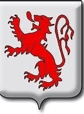

66978197552182 Greve Leuthard I of Fezensac
Greve av Fezensac. Blev högst 28 år.

Född:
785 Paris, France.
[1]
Död:
813 Paris, France.
[1]
Barn med
66978197552183 Grevinna Grimhildis av Akvitanien (784? - 856?)
Barn:
Engeltrude de Fézensac (799? - 853)
Personhistoria
Årtal
Ålder
Händelse
785
Födelse 785 Paris, France
[1]
799?
Dottern
33489098776091 Grevinna Engeltrude de Fézensac
föds omkring 799 Paris, France
813
Död 813 Paris, France
[1]
Källor
[1]
Sharon Doubell